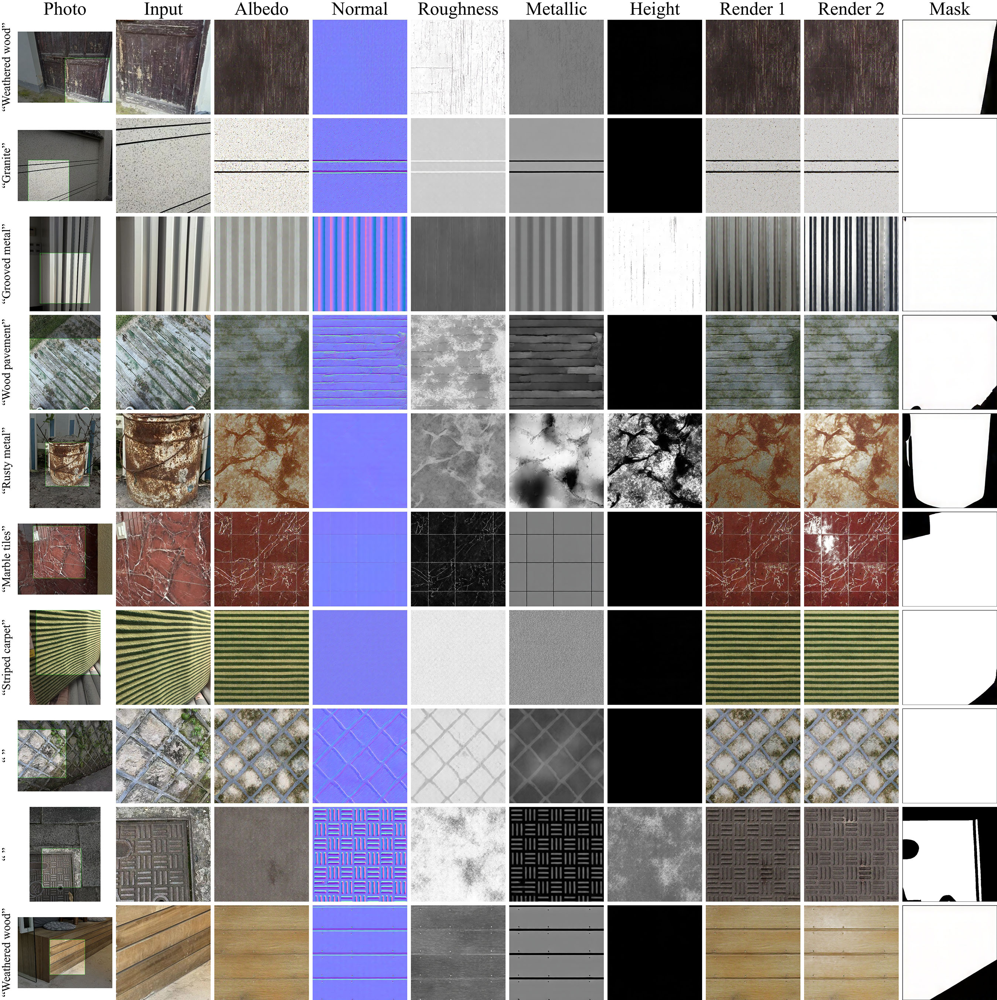
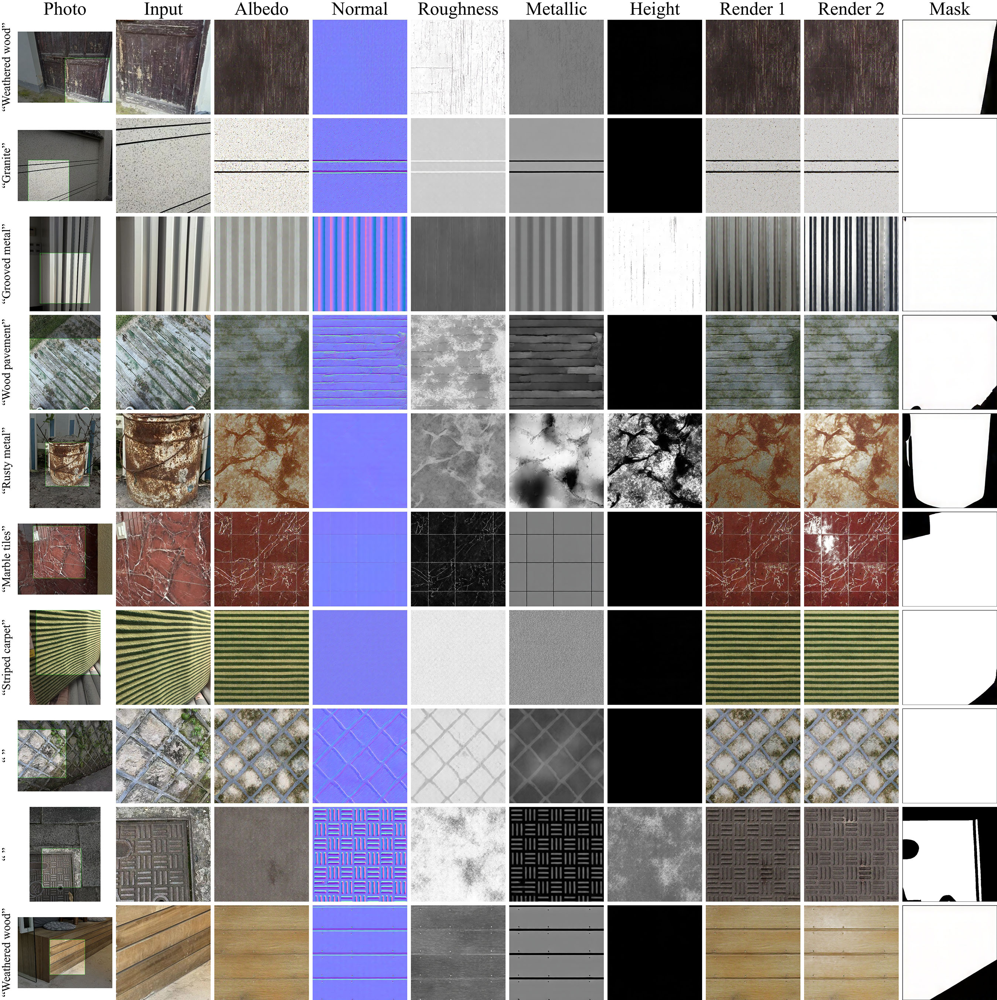

We introduce MaterialPicker, a DiT-based model that generates high-quality materials, conditioned on image crops and/or text prompts. Our model accurately captures textures and material properties even from photographs of distorted or partially obscured surfaces. We demonstrate MaterialPicker by extracting material properties (albedo, normal, height, roughness and metallicity, shown in a column next to the input crops) from smartphone-captured photos, then applying these materials in a 3D scene for photo-realistic rendering results.


 
